Patrones de diseño para aplicaciones basadas en servicios
Tema 4 de 5 Cuarto curso, 1.º cuatrimestre ≈ 26 min de lectura
Temas de ENSER · 4/5
- 1. Introducción a la Ingeniería de Servicios
- 2. Componentes distribuidos y estilos arquitectónicos. SOAP y REST
- 3. Concepto de servicio y servicios sin estado. Buenas prácticas en el diseño de servicios
- 4. Patrones de diseño para aplicaciones basadas en servicios
- 5. Más allá de REST
4.1 Documentación de APIs REST
La documentación de un servicio REST no es un extra: es lo que permite la interoperabilidad, el desacoplamiento y que la API se pueda mantener y evolucionar. Cumple tres papeles:
- Contrato: es el punto de referencia único entre cliente y servidor; mientras ambos respeten el documento, pueden cambiar por dentro sin coordinarse.
- Guía para desarrolladores: facilita consumir, mantener y depurar la API.
- Mecanismo de descubrimiento (discoverability): permite montar catálogos de APIs, como apis.guru ("la Wikipedia de las APIs web") o directorios de APIs públicas.
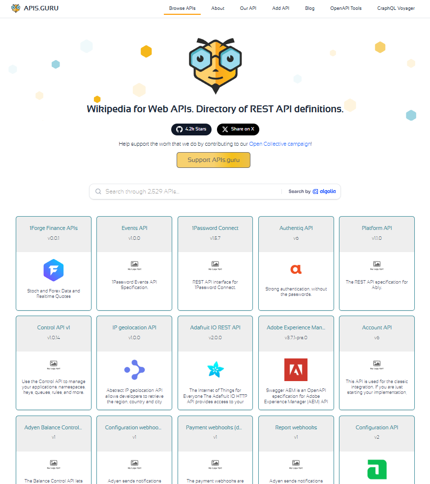
A lo largo del tiempo han aparecido varios lenguajes para escribir ese contrato de forma formal:
| Lenguaje | Formato | Idea | Por qué triunfó o no |
|---|---|---|---|
| WADL (Web Application Description Language) | XML | Primer intento serio, inspirado en el WSDL de SOAP. Describe recursos (<resource>), acciones (<method>), tipos de datos (<representation>, modelados con <grammars>) y tipo de parámetro con el atributo style |
Poco expresivo y atado a XML cuando las APIs ya usaban JSON. Obsoleto |
| RAML (RESTful API Modeling Language) | YAML | Pensado específicamente para diseñar y documentar REST; prioriza la lectura humana y la reutilización de fragmentos; facilita el enfoque design-first | Perdió la batalla porque las grandes empresas apoyaron OpenAPI |
| API Blueprint | Markdown | El contrato va dentro del texto Markdown: documentación legible por naturaleza, muy human-friendly | Poco soporte de herramientas (generación de código, validación, mocking) y poca estandarización |
| OpenAPI (OAS) | JSON o YAML | Especificación formal, estandarizada e independiente del lenguaje de programación | Adopción masiva y muchísimas herramientas (generar código, validar, mocks…). Es el estándar actual |
4.1.1 OpenAPI
Una especificación OpenAPI define de forma estandarizada:
paths: todas las rutas (endpoints) disponibles.operations: para cada ruta, qué métodos HTTP admite y qué hace cada uno.parameters: parámetros obligatorios u opcionales, dónde van (ruta, consulta, cabecera…), su tipo y descripción.schemas: la estructura exacta de los objetos de datos de peticiones y respuestas.responses: todos los códigos de estado posibles y, para cada uno, el formato y esquema de la respuesta.security: los mecanismos de autenticación y autorización que exige la API.
paths:
/usuarios:
get:
summary: Obter a lista de Usuarios
parameters:
- name: estado
in: query # parámetro de consulta
required: false
schema: { type: string, enum: [activo, inactivo], default: activo }
responses:
'200':
description: Lista de usuarios devolta correctamente.
content:
application/json:
schema:
type: array
items: { $ref: '#/components/schemas/Usuario' } # esquema reutilizable
'400':
description: Solicitude incorrecta
4.2 Versionado de APIs
Cualquier cambio en una API puede "romper" a los clientes que ya la usan. Por eso hace falta una estrategia de versionado: los cambios disruptivos (quitar un campo, cambiar un tipo) exigen una versión nueva, mientras que los no disruptivos (añadir un campo opcional) no. Una buena estrategia permite compatibilidad hacia atrás, migración gradual de los clientes e innovar sin miedo.
Hay cuatro formas de indicar la versión, que van de la más sencilla a la más "pura" según REST:
| Estrategia | Ejemplo | A favor | En contra |
|---|---|---|---|
| En la URL | /v2/usuarios |
La más extendida, clara y sencilla para el cliente; la más amigable con las cachés (la URL ya es la clave de caché) | La menos REST: la URL debería identificar el recurso de forma atemporal, no una versión suya. En el código provoca ramificaciones y duplicación de controladores y servicios |
| Parámetro de consulta | /usuarios?version=2 |
Fácil fijar una versión por defecto (la última) y cambiar bajo demanda | Semánticamente sucio (la query es para filtrar, paginar o limitar campos); poco amigable con cachés (hay que configurarlas para incluir el parámetro en la clave); complica el enrutamiento |
| Cabecera personalizada | x-api-version: 2 |
Mejor alineado con REST: la URL queda pura y la versión se negocia aparte | Menos descubrible, peticiones más complejas; las cachés deben configurarse para usar la cabecera como clave |
| MediaType (negociación de contenido) | Accept: application/myapp.user.v2+json, Accept: application/json;version=2 o combinados (application/myapp.user+json;version=2) |
El más alineado con REST; permite elegir versión recurso a recurso | Igual que las cabeceras: configuración extra para cachear |
4.3 HATEOAS
HATEOAS (Hypermedia as the Engine of Application State) es un patrón fundamental de REST que hace la API autodescubrible: cada respuesta incluye, además de los datos, enlaces a las operaciones que se pueden hacer a continuación. Así el cliente solo necesita conocer el punto de entrada y va descubriendo el resto dinámicamente, igual que navegas por una web siguiendo enlaces sin saberte las URLs.
Cada enlace lleva la URL, el método HTTP y una relación que dice qué significa ese enlace respecto al recurso actual:
- Relaciones estándar (definidas por la IANA):
self(el propio recurso),next/prev/first/last(páginas de una colección),item(un miembro de la colección),collection,author… - Relaciones del dominio, propias de la aplicación:
ingresar,cancelar-pedido,engadir-ao-carro…
Analogía
Un cajero automático no te enseña todas las operaciones del banco: según tu saldo y tu tarjeta te muestra solo los botones que puedes pulsar ahora. Los enlaces HATEOAS son esos botones.
Para entenderlo mejor
HATEOAS — Wikipedia — definición y ejemplo de respuesta con enlaces (artículo).
4.3.1 Formas de incluir los enlaces
Cabecera Link: los enlaces van en la cabecera HTTP y el cuerpo queda limpio, pero es la opción menos cómoda para los clientes.
HTTP/1.1 200 OK
Content-Type: application/json
Link: <https://api.banco.exemplo/contas/ES80.../ingresos>; rel="ingresar"; method="POST"
Link: <https://api.banco.exemplo/contas/ES80...>; rel="self"
{ "numero_conta": "ES80...", "titular": "Pepe Pérez", "saldo": 1500.00, "estado": "ACTIVA" }
El resto son formatos hipermedia que meten los enlaces dentro del JSON:
| Formato | MIME | Cómo es | Valoración |
|---|---|---|---|
| HAL | application/hal+json |
Campos _links (enlaces) y _embedded (subrecursos) |
Muy fácil y con muchas librerías, pero básico: no describe peticiones complejas |
| HAL-Forms | application/prs.hal-forms+json |
Extiende HAL con _templates: operaciones con verbos distintos de GET y plantillas del contenido a enviar (campos, tipos, obligatorios, mínimos…) |
Cubre lo que le falta a HAL |
| Siren | application/vnd.siren+json |
Describe entidades, enlaces y acciones (class, properties, links, actions con sus fields), como un formulario HTML |
Muy expresivo, pero más complejo, verboso y con menos herramientas que HAL |
| JSON-LD | application/ld+json |
JSON para Linked Data: un objeto @context mapea cada término JSON a un elemento semántico (ontologías); @id, @type |
Estándar W3C, potentísimo para interoperabilidad semántica; curva de aprendizaje alta, excesivo para APIs sencillas |
{
"numero_conta": "ES80...", "titular": "Pepe Perez", "saldo": 1500.00,
"_links": {
"self": { "href": "https://api.banco.exemplo/contas/ES80..." },
"movementos": { "href": "https://api.banco.exemplo/contas/ES80.../movementos{?tipo}", "templated": true }
}
}
Ejemplo HAL: templated: true indica que la URL es una plantilla ({?tipo} se rellena).
4.4 Seguridad en REST
La seguridad se apoya en dos pilares:
- Autenticación: verificar la identidad del cliente. Responde a "¿quién eres?".
- Autorización: decidir qué puede hacer esa identidad sobre cada recurso. Responde a "¿qué tienes permitido hacer?".
Como REST es sin estado, ambas deben resolverse con la información de cada petición. Por eso se usan tokens que el cliente envía en cada llamada, normalmente en la cabecera Authorization.
4.4.1 Tokens opacos
Tras el login, el servidor genera un token opaco: una cadena aleatoria y única (p. ej. un UUID) que no significa nada por sí misma. Lo guarda en una base de datos asociado al usuario y con fecha de expiración, y se lo devuelve al cliente.
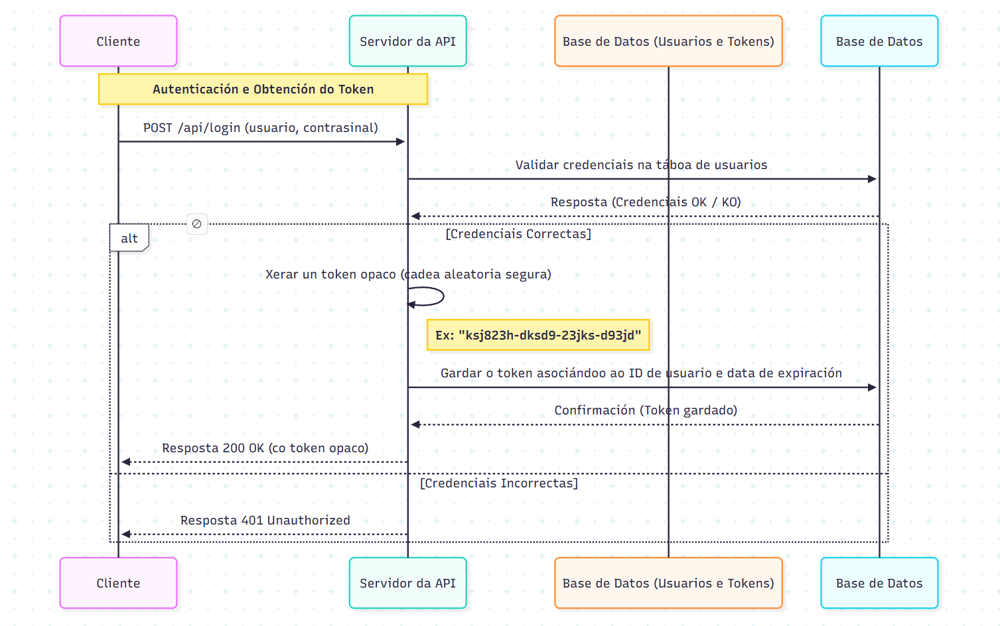
En cada petición el cliente envía Authorization: Bearer <token> y el servidor consulta la BD en cada solicitud para comprobar que el token existe y no ha caducado; si es válido ya conoce el ID del usuario y sirve los datos, si no, responde 401 Unauthorized.
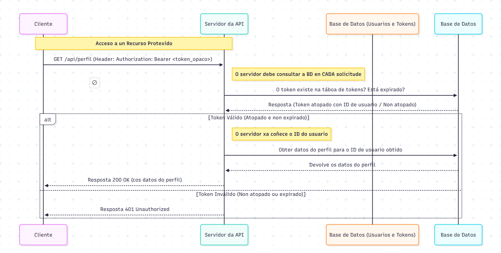
Invalidar un token es trivial: se borra de la BD. El problema es que esto choca con el principio sin estado de REST, porque el servidor depende de un almacén de tokens.
4.4.2 JSON Web Tokens (JWT)
Con JWT, tras el login el servidor genera un token firmado y se lo envía; el cliente lo manda en cada petición (Authorization: Bearer <token>) y el servidor solo comprueba su validez. La clave es que los JWT son autocontenidos: llevan dentro los datos (usuario, roles, caducidad) y la firma que prueba que no se han tocado, así que no hace falta guardarlos en ninguna BD.
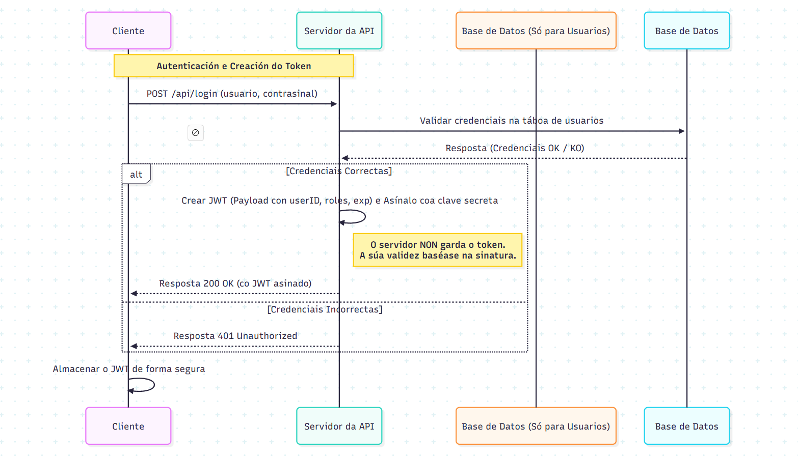
El servidor NO guarda el token: su validez se basa en la firma. El cliente lo almacena de forma segura.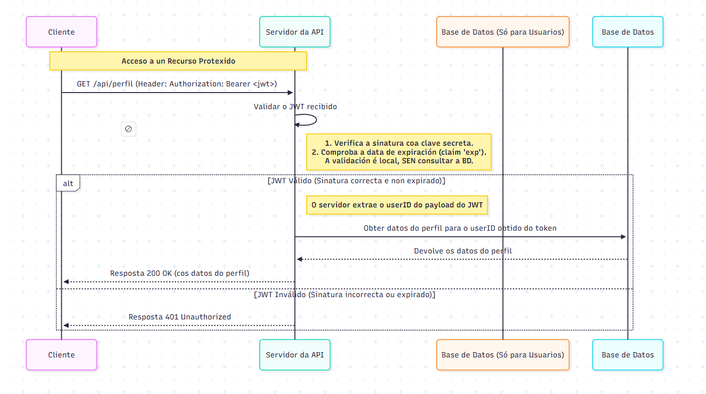
Validación local: verifica la firma con la clave y la caducidad (exp), sin consultar la BD; luego extrae el userID del payload.
Analogía
El token opaco es el número de un guardarropa: sin consultar el libro del guardarropa no sabes de quién es. El JWT es un DNI: lleva tus datos impresos y un sello difícil de falsificar, así que cualquiera que conozca el sello puede comprobarlo sin llamar a nadie.
Un JWT tiene 3 partes en base64 separadas por puntos: <header>.<payload>.<signature>.
- Header: tipo de token y algoritmo de firma, p. ej.
{"alg": "HS256", "typ": "JWT"}. - Payload: la carga útil, formada por claims (identidad del usuario, caducidad, permisos…). Base64 no es cifrado: cualquiera puede leerlo, así que nunca debe llevar información sensible.
- Signature: firma criptográfica de
<header>.<payload>calculada con el algoritmo del header y una clave secreta/privada del servidor. Al recibir el token, el servidor recalcula la firma y la compara con la adjunta; si coinciden, garantiza integridad y autenticidad (nadie ha cambiado el contenido).
Claims estándar del payload:
| Claim | Significado |
|---|---|
iss |
Emisor del JWT |
sub |
Sujeto principal (para quién se emite) |
aud |
Destinatarios |
exp |
Instante de caducidad |
nbf |
Instante antes del cual no debe aceptarse (not before) |
iat |
Instante de emisión (issued at) |
jti |
Identificador único del token; sirve para evitar ataques de repetición |
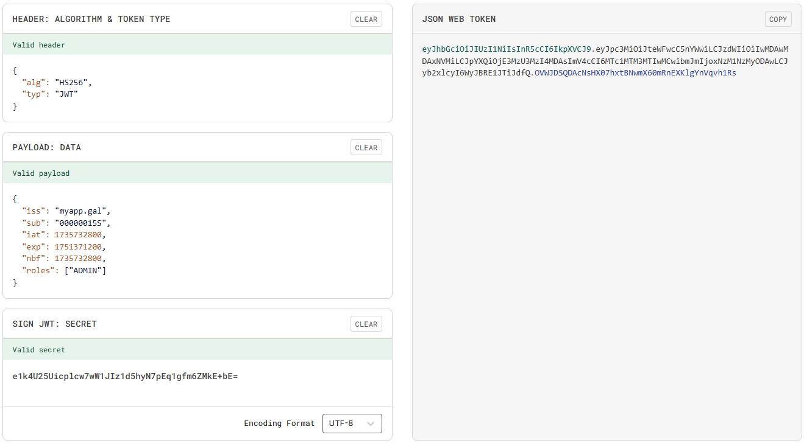
Header, payload (conroles: ["ADMIN"]) y secreto a la izquierda; el token resultante a la derecha, con sus tres partes.
Para entenderlo mejor
Qué es JWT, cómo funciona y buenas prácticas — CodelyTV compara JWT con sesiones y explica su estructura (vídeo, 19 min). Introduction to JSON Web Tokens — referencia de jwt.io con la estructura y el flujo (artículo, inglés).
Refresh tokens
Como el JWT no tiene estado, quien lo posea puede hacerse pasar por el usuario. Hay que guardarlo en sitios seguros y, sobre todo, limitar el daño si se roba: tokens de acceso de vida corta + tokens de refresco de vida larga.
En el login se generan dos tokens:
- Access token (JWT, p. ej. 15 min): se guarda en memoria y se usa en cada petición.
- Refresh token (opaco, p. ej. 7 días): se guarda en el servidor asociado al usuario y en el cliente en una cookie segura:
Set-Cookie: __Secure-RefreshToken=<token>;Path=/refresh-token;Max-Age=2592000;Secure;HttpOnly;SameSite=Strict
HttpOnly impide que JavaScript lea la cookie, Secure la envía solo por HTTPS, SameSite=Strict evita que otras webs la usen y Path la limita al endpoint de refresco.
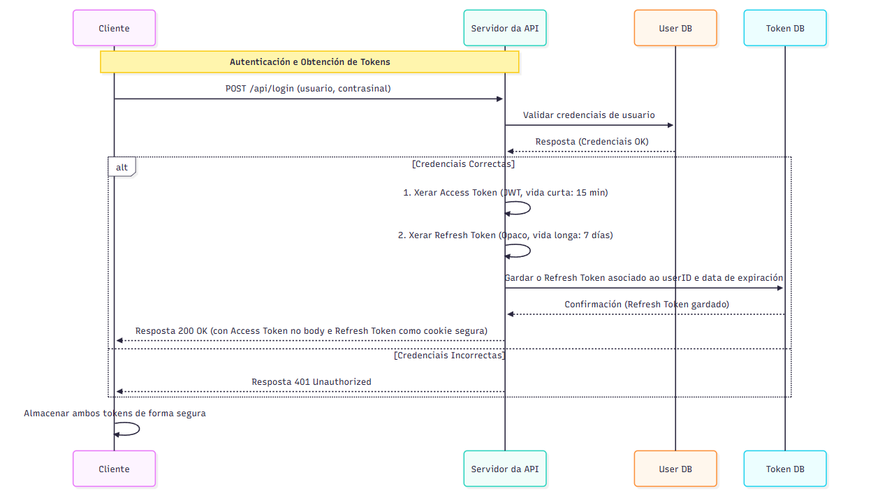
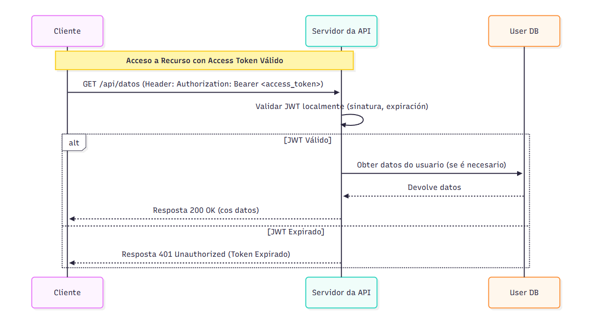
Cuando la API devuelve 401 porque el access token caducó, el cliente llama a /api/refresh con el refresh token. Si es válido y no está revocado, el servidor emite un par nuevo (e invalida el refresh viejo) y el cliente reintenta la llamada que falló; si no, hay que volver a iniciar sesión.
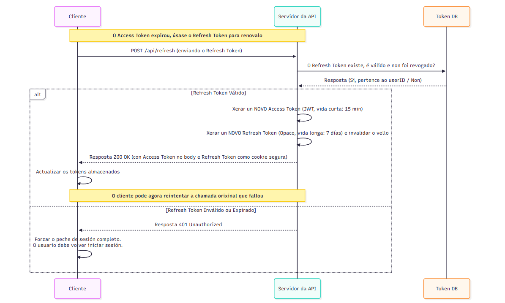
Cómo invalidar un JWT
Al no tener estado, un JWT es válido hasta su exp. ¿Cómo se cierra sesión? Con listas de denegación (blocklists): se guardan los jti de los tokens revocados y el servidor los consulta antes de aceptar cualquier token. Funciona, pero va contra el enfoque sin estado.
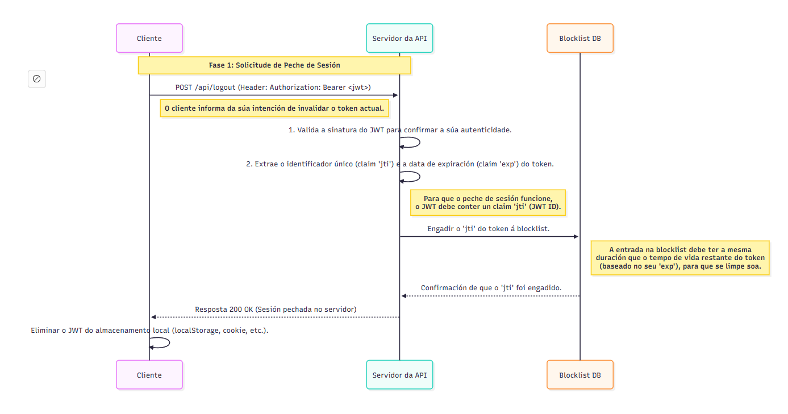
El JWT debe tenerjti. La entrada en la blocklist dura lo que le queda de vida al token (según exp), para que la lista se limpie sola.
Con refresh tokens hay dos escenarios de cierre de sesión:
- Cerrar sesión en este dispositivo: el cliente envía su refresh token y el servidor lo borra; el cliente elimina ambos tokens localmente. El access token viejo aún funcionaría unos minutos hasta caducar, pero ya no podrá renovarse.
- Cerrar sesión en todos los dispositivos (
/api/logout-all, autenticada con el access token): el servidor saca eluserIDy borra todos los refresh tokens de ese usuario, invalidando las sesiones de otros navegadores y dispositivos.
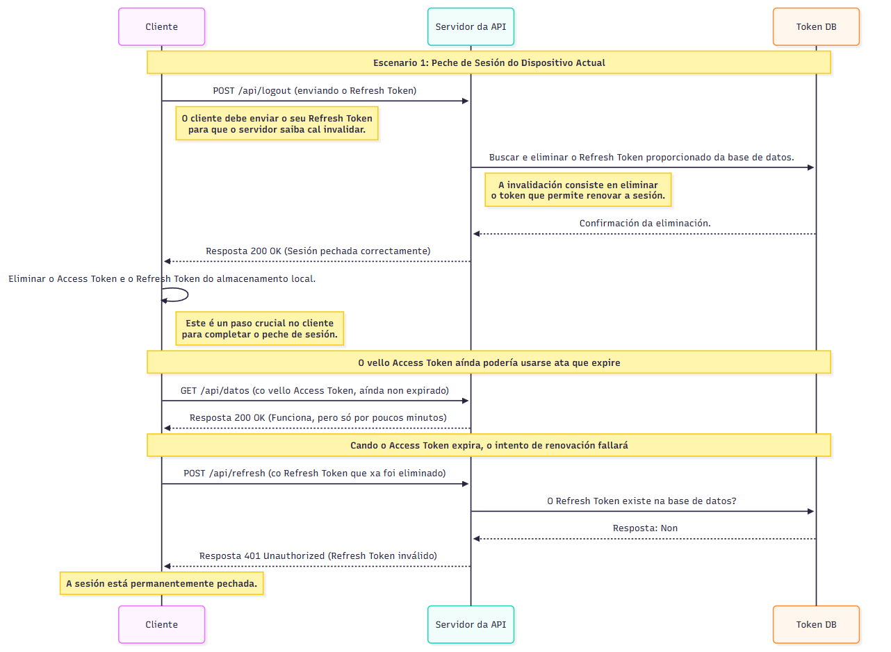
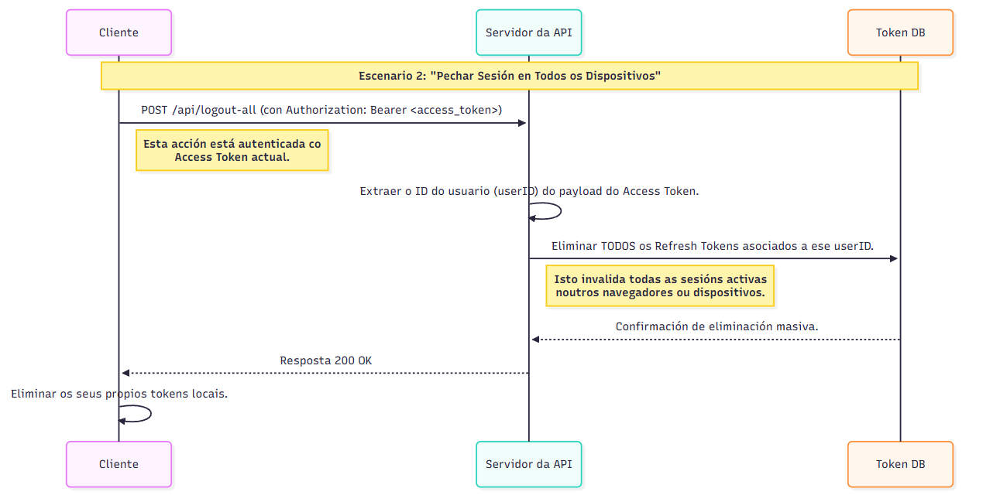
4.4.3 El ecosistema JOSE
JWT forma parte de JOSE (JavaScript Object Signing and Encryption), un conjunto de estándares de la IETF para dar integridad, autenticidad, confidencialidad y claves estandarizadas a objetos JSON:
| Estándar | Para qué |
|---|---|
| JWS (JSON Web Signature) | Integridad y autenticidad. No oculta los datos, solo asegura que no se han modificado |
| JWE (JSON Web Encryption) | Confidencialidad: el payload va cifrado y solo lo lee el destinatario. Token de 5 componentes; suele combinarse con JWS |
| JWK / JWKS (JSON Web Key / Key Set) | Serializar claves criptográficas (simétricas o asimétricas) en JSON |
| JWA (JSON Web Algorithms) | Identificadores estándar de los algoritmos de firma y cifrado |
4.4.4 OAuth 2.0 y OpenID Connect
OAuth 2.0 y OpenID Connect (OIDC) permiten dar acceso a terceros sin compartir contraseñas y habilitan el inicio de sesión único (SSO). OAuth 2.0 es un framework de autorización delegada: una app obtiene acceso limitado a tus recursos en otro servicio sin ver tus credenciales. OIDC añade encima una capa de autenticación para que el cliente sepa quién es el usuario.
Analogía
Es la llave de aparcacoches: das al aparcacoches (la app) una llave que solo arranca el coche, no abre el maletero ni la guantera. Tu llave maestra (la contraseña) nunca sale de tu bolsillo.
En lugar de un único servidor que autentica y sirve datos, OAuth 2.0 separa cuatro roles:
- Resource owner: el usuario dueño de los datos, que concede los permisos.
- Cliente: la app que pide acceso o identificar al usuario; nunca ve sus credenciales.
- Authorization server / Identity provider (IdP): autentica al usuario, gestiona el consentimiento y emite los tokens (Google, Auth0, AWS Cognito, Keycloak…).
- Resource server: la API REST que sirve los datos y los protege validando el token en cada petición.
En un flujo OIDC/OAuth se emiten hasta 3 tokens:
| Token | Formato | Uso |
|---|---|---|
| ID token | JWT | Claims de identidad (nombre, email, avatar). Lo usa el cliente para saber quién inició sesión; nunca se envía al resource server |
| Access token | JWT u opaco | Permisos autorizados (scope). El cliente lo guarda en memoria y lo manda con Authorization: Bearer |
| Refresh token | Opaco | Se envía al authorization server para obtener nuevos access tokens cuando caducan |
Descubrimiento y validación con JOSE
Para que la API valide los JWT sin preguntar al authorization server en cada petición, este publica rutas predefinidas:
- OIDC Discovery en
/.well-known/openid-configuration: URLs de autorización y de obtención de tokens, algoritmos soportados (en formato JWA)… - Claves JWKS en
/.well-known/jwks.json: las claves públicas del servidor en formato JWK.
La API lee el identificador de clave de la cabecera del JWT, descarga y cachea esa clave pública del endpoint JWKS y verifica el token localmente.
Flujos de OAuth 2.0
Hay varios flujos según el tipo de cliente:
- Authorization code + PKCE: el estándar actual para apps web, de escritorio y móviles.
- Client credentials: comunicación máquina a máquina (M2M), entre microservicios o daemons sin humano de por medio.
- Device authorization flow: dispositivos con entrada limitada (Smart TV, videoconsolas).
Las versiones antiguas tenían otros flujos, hoy deprecated por inseguros.
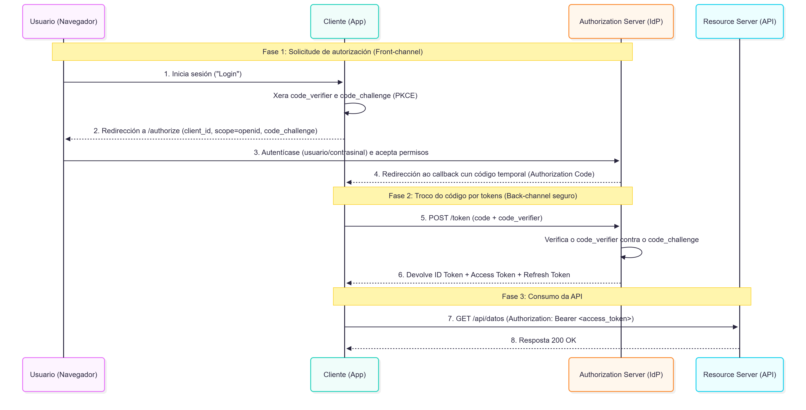
El flujo con PKCE (Proof Key for Code Exchange) tiene tres fases:
- Solicitud de autorización (front-channel): el usuario pulsa "Login"; la app genera un
code_verifiersecreto y sucode_challenge(un hash) y redirige al navegador a/authorizeconclient_id,scope=openidy elcode_challenge. El usuario se autentica en el IdP y acepta permisos; el IdP redirige de vuelta con un código temporal (authorization code). - Canje del código por tokens (back-channel seguro): la app hace
POST /tokencon el código y elcode_verifier; el IdP comprueba que el verifier corresponde al challenge y devuelve ID token + access token + refresh token. - Consumo de la API:
GET /api/datosconAuthorization: Bearer <access_token>→ 200 OK.
La gracia de PKCE es que, aunque alguien intercepte el código en la redirección, no puede canjearlo porque no conoce el code_verifier.
Para entenderlo mejor
OAuth 2.0 + PKCE Explained — recorrido animado del flujo con PKCE y los tokens (vídeo, 9 min, inglés). PKCE — oauth.net — página de referencia de la comunidad OAuth (artículo, inglés).
4.4.5 Estrategias de autorización
Una vez autenticado el cliente, hay que comprobar qué puede hacer. Las estrategias se diferencian en su granularidad y escalabilidad:
| Estrategia | Se concede a… | Granularidad | Escalabilidad | Ejemplo |
|---|---|---|---|---|
| DAC (Discretionary Access Control) | Cada usuario individual | Muy alta | Muy baja: inmanejable al crecer | Ver comentarios de una noticia: el usuario <id=user> |
| PBAC (Permission-Based) | Usuarios con permisos atómicos (users:create, users:read…) |
Muy alta | Baja: hay que asignar cada permiso a cada usuario a mano | Cualquiera con comments:read |
| RBAC (Role-Based) | Roles; los usuarios tienen roles | Menor | Muy alta, fácil de mantener. La más usada | Modificar comentarios: rol moderador |
| RBAC + PBAC | Permisos → roles → usuarios | Alta | Alta | comments:update está en el rol moderador, que se asigna a usuarios |
| ABAC (Attribute-Based) | Políticas sobre atributos del usuario, recurso, acción y contexto | La más flexible y granular | — | Modifica un comentario quien tenga comments:update (moderadores) o su autor si han pasado menos de 12 h desde la publicación |
4.5 Calidad de servicio (QoS)
La QoS (Quality of Service) es el conjunto de métricas que definen el rendimiento y la fiabilidad de un servicio. En arquitecturas de servicios es crítica por tres motivos:
- Un servicio es una promesa de ejecución, no solo funcionalidad: una API perfectamente diseñada pero lenta o poco disponible es una mala API para quien la consume.
- Hay dependencias: un fallo puede provocar efectos en cascada. ¿Qué pasa si un servicio es muy lento, o falla el 50 % de las veces?
- Los servicios comparten recursos (red, BD, CPU): ¿y si la red se satura o un cliente malicioso acapara toda la CPU?
Se evalúa desde cuatro perspectivas:
| Métrica | Qué mide | Cómo se expresa |
|---|---|---|
| Disponibilidad (uptime) | % del tiempo que el servicio funciona y responde bien | En "nueves": 99 % (dos nueves) ≈ 3,65 días caído al año como máximo; 99,999 % (cinco nueves) ≈ 5,26 min al año |
| Rendimiento (latencia) | Tiempo que tarda el servidor en procesar y responder (la latencia de la red no cuenta) | En ms y con percentiles: p50 (x ms) = el 50 % de peticiones tarda menos de x ms; p95/p99 = el 95 %/99 % |
| Capacidad (throughput) | Cuántas peticiones aguanta por unidad de tiempo y cómo escala con más clientes | RPS o RPM (peticiones por segundo/minuto) |
| Fiabilidad (tasa de error) | % de peticiones que fallan por culpa del servidor | % de errores 5XX sobre el total. No se cuentan los 4XX, que son errores del cliente |
Por qué percentiles y no la media
Si 99 peticiones tardan 10 ms y una tarda 5 s, la media (≈ 60 ms) parece aceptable, pero ese 1 % de usuarios está esperando 5 segundos. El p99 lo destapa.
4.5.1 Acuerdos de nivel de servicio (SLA)
Un SLA (Service Level Agreement) convierte métricas de QoS en un contrato formal entre proveedor y consumidor. Un SLA bien hecho incluye métricas objetivo (latencia, disponibilidad), penalizaciones si no se cumplen (normalmente créditos o descuentos), exclusiones (situaciones fuera del control del proveedor) y los límites de uso del cliente con sus consecuencias si los supera. Los SLA son la base de los planes de pago: cuanto más caro el plan, más exigente la QoS.
Hay tres términos encadenados:
- SLI (indicador): la medición concreta y cuantitativa (latencia, uptime…).
- SLO (objetivo): la meta interna para un SLI (p. ej. "p95 < 300 ms").
- SLA (acuerdo): el contrato externo que formaliza uno o varios SLO y sus consecuencias (p. ej. "si el p95 trimestral supera 300 ms, el cliente recibe un 10 % de descuento en la siguiente cuota").
Para entenderlo mejor
Service Level Objectives — Google SRE Book — el capítulo de referencia sobre SLI, SLO y SLA (artículo, inglés).
4.5.2 Monitorización y observabilidad
¿Cómo sé si cumplo los SLO, y si no, por qué? Con dos capacidades complementarias:
- Monitorización: vigilar un conjunto de métricas predefinidas (los SLI). Avisa cuando algo conocido va mal.
- Observabilidad: capacidad de entender el estado interno del sistema analizando sus salidas. Permite investigar problemas complejos y desconocidos.
Ambas se basan en tres elementos:
- Métricas: agregaciones numéricas en el tiempo (series temporales). Dicen cómo está el sistema.
- Registros (logs): eventos discretos e inmutables. Dicen qué pasó en cada instante y dan el contexto para encontrar la causa concreta.
- Trazas: el viaje completo de una petición a través de los servicios. Agrupan sus "pasos", muestran dependencias y localizan dónde se origina el problema; además se enlazan con los logs para filtrar los eventos de una petición concreta.
El estándar actual es OpenTelemetry, que desacopla la instrumentación del código del backend que recibe los datos.
4.6 Mecanismos para asegurar la QoS
Para cumplir los SLA hay que limitar el abuso de las APIs con tres tipos de mecanismos:
- Limitación de tasa (rate limits): máximo de peticiones por unidad de tiempo corta (p. ej. 10 peticiones/s). Protege del uso abusivo, intencionado o no, y reparte los recursos de forma justa.
- Cuotas (quotas): límites a largo plazo, alineados con la facturación (p. ej. 100 GB de transferencia al mes).
- Arquitecturas escalables y resilientes: infraestructura distribuida y mecanismos de resiliencia, tanto de infraestructura (balanceadores, autoescalado, redundancia) como de software (patrones circuit breaker, retry, timeout…).
4.6.1 Limitación de tasa
Es el mecanismo más importante para proteger la estabilidad en tiempo real. Los dos algoritmos más populares:
- Token bucket: el cliente tiene un cubo de tokens que se reponen a ritmo constante; cada petición gasta tokens y, sin tokens, se rechaza. Permite picos cortos (mientras queden tokens acumulados).
- Leaky bucket: las peticiones entran en una cola que se vacía a ritmo constante; si la cola se llena, las nuevas se rechazan. Garantiza un flujo constante, sin picos.
Analogía
Token bucket: una hucha que recibe una moneda por segundo; puedes ahorrar y gastar varias de golpe. Leaky bucket: un embudo con un agujero fijo; por mucho que eches de golpe, abajo siempre sale el mismo chorrito, y si rebosa, lo que sobra se pierde.
Si un cliente supera el límite se devuelve 429 Too Many Requests con una cabecera Retry-After (cuánto esperar). Es buena práctica añadir a todas las respuestas X-RateLimit-Limit (tokens totales de la ventana), X-RateLimit-Remaining (tokens restantes) y X-RateLimit-Reset (cuándo se reinicia la cuenta).
4.6.2 Cuotas
Una cuota limita el volumen total de uso durante un periodo largo (p. ej. 1M de peticiones al mes), independientemente de la velocidad de consumo. Permite definir niveles de servicio y alinearlos con los planes de pago. Al superarla:
- Hard limit: se corta el acceso devolviendo
403(no autorizado a más peticiones en ese periodo). - Pay-as-you-go: el cliente sigue usando el servicio, pero se le cobra el uso adicional.
4.6.3 Patrones de resiliencia
Timeout — "Nunca esperes indefinidamente". Se fija un tiempo máximo de espera; si la operación tarda más, se aborta (en cliente o en servidor). Riesgo: procesos zombis, tareas que siguen ejecutándose aunque su resultado se vaya a ignorar.
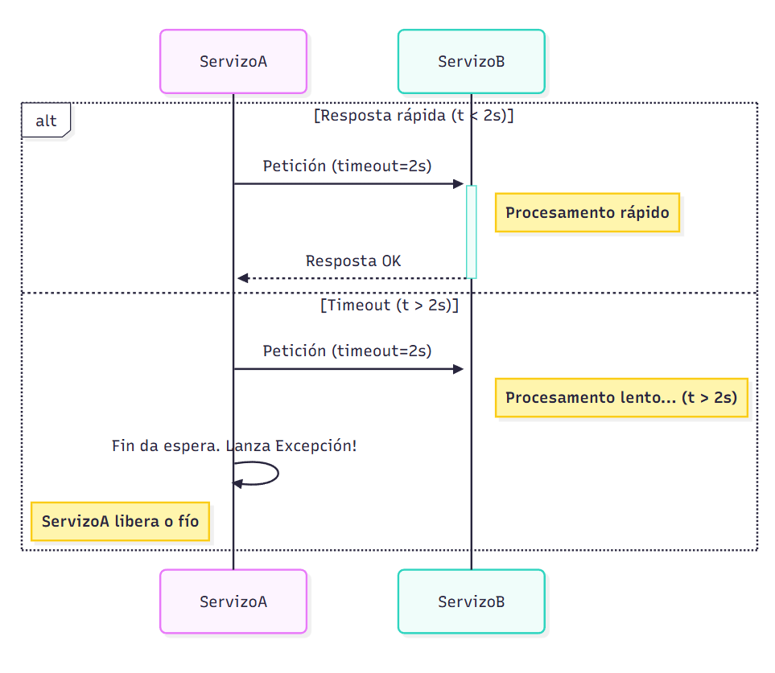
Con timeout de 2 s: si B responde rápido, todo normal; si tarda más, A lanza una excepción y libera el hilo.Retry — "Inténtalo de nuevo, pero con cuidado". Muchos fallos de red son transitorios y un reintento los resuelve. El gran riesgo es que todos reintenten a la vez y hundan el servicio; por eso las esperas son exponenciales según el número de intentos (≈ POST de pago reintentado podría cobrar dos veces).
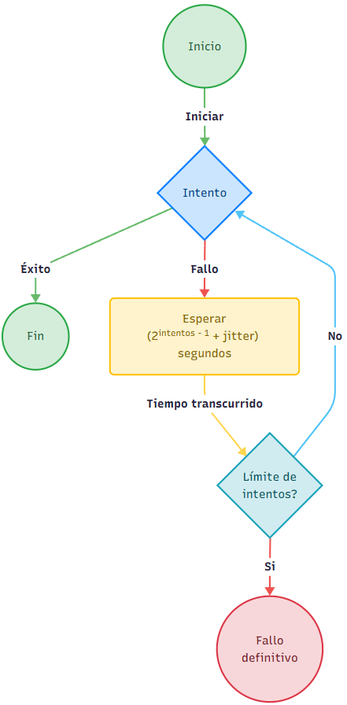
Circuit breaker — "Deja de llamar a un servicio que sabes que está roto". Envuelve las llamadas en una máquina de tres estados:
- Cerrado: estado normal, las llamadas pasan. Al alcanzar el umbral de fallos → abierto.
- Abierto: durante un tiempo (p. ej. 30 s) todas las llamadas se rechazan sin intentarlo. Agotado el tiempo → semiabierto.
- Semiabierto: se deja pasar alguna llamada de prueba; si va bien → cerrado, si falla → abierto otra vez.
Así el invocador falla rápido y el invocado tiene tiempo para recuperarse.
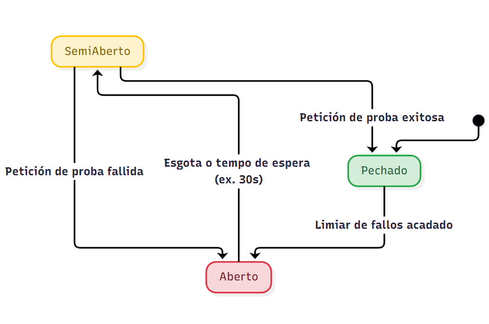
Analogía
Es el diferencial de casa: si detecta un problema, corta la corriente para que no se queme nada. Pasado un rato lo subes con cuidado (semiabierto) y, si vuelve a saltar, sigue habiendo avería.
Para entenderlo mejor
CircuitBreaker — Martin Fowler — explicación de referencia con diagramas de estados (artículo, inglés).
Bulkhead — "Si un compartimento se inunda, que al menos no se hunda el barco entero". Se aíslan los recursos para que un componente defectuoso no acapare todos y "contagie" al resto. A nivel de software (pools de hilos o de conexiones a BD separados) o de infraestructura (clientes básicos en un despliegue y clientes pro en otro). Riesgo: infrautilizar recursos.
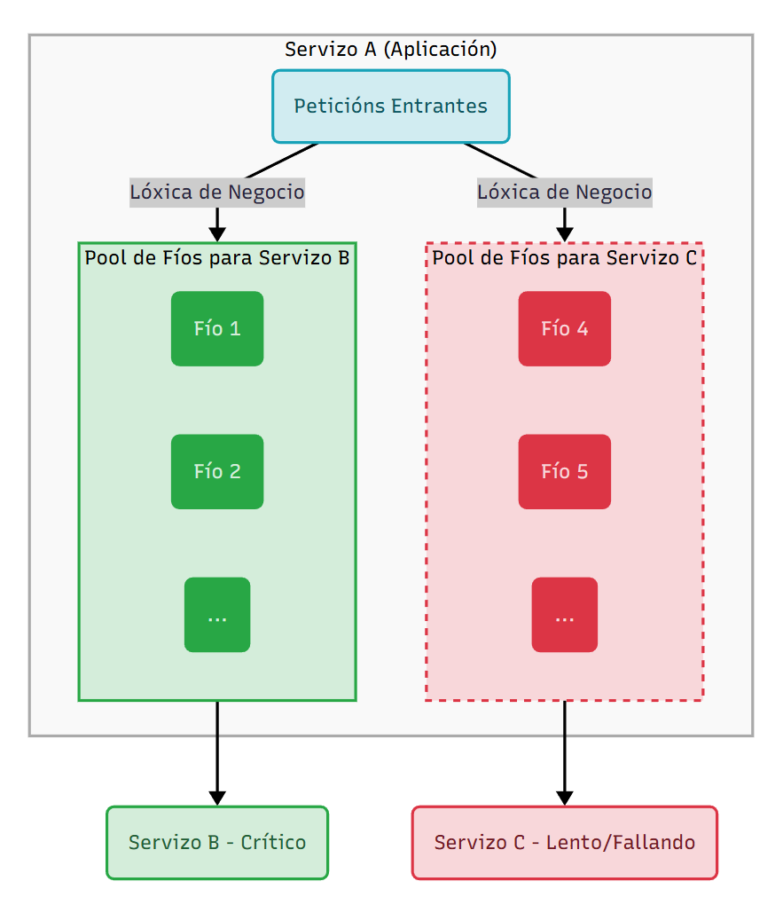
El servicio A tiene un pool de hilos para B y otro para C: si C se vuelve lento y agota su pool, las llamadas a B (crítico) siguen funcionando.Fallback — "¿Qué hacer cuando todo lo demás falla?". Cuando ya se sabe que el servicio no funciona (por retry, timeout, circuit breaker…), en vez de devolver un error se recurre a un plan B: datos de caché, valores por defecto, implementaciones más simples y menos exactas, aproximaciones… o, como mínimo, un manejo amigable del error.
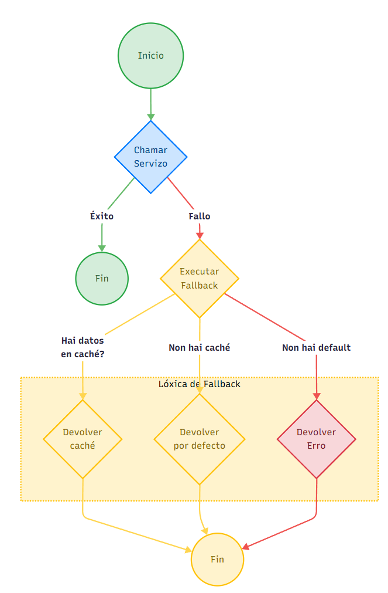
Si falla la llamada: ¿hay datos en caché? → devolverlos; si no, ¿hay valor por defecto? → devolverlo; si no, devolver error.4.x Ideas clave
- La documentación es contrato, guía y mecanismo de descubrimiento. OpenAPI (JSON/YAML) es el estándar; WADL (XML) está obsoleto, RAML y API Blueprint no cuajaron.
- Versionado: URL (simple, cacheable, poco REST) → query → cabecera → MediaType (el más REST, necesita configurar cachés). Solo los cambios disruptivos exigen versión nueva.
- HATEOAS: cada respuesta trae enlaces (
relestándar IANA o del dominio) a las siguientes acciones. Formatos: cabeceraLink, HAL (_links,_embedded), HAL-Forms (_templates), Siren, JSON-LD. - Autenticación = quién eres; autorización = qué puedes hacer. Siempre sin estado, con token en
Authorization: Bearer. - Token opaco: aleatorio, guardado en BD, fácil de revocar pero con estado. JWT:
header.payload.signature, autocontenido y verificable sin BD, payload legible (nada sensible), difícil de revocar (blocklist porjti). - Access token corto (15 min, en memoria) + refresh token largo (7 días, cookie
HttpOnly; Secure; SameSite). - JOSE: JWS firma, JWE cifra (5 partes), JWK/JWKS claves, JWA algoritmos.
- OAuth 2.0 = autorización delegada; OIDC = autenticación encima. Roles: resource owner, cliente, authorization server, resource server. Tokens: ID, access, refresh. Flujos: authorization code + PKCE, client credentials (M2M), device flow.
- Autorización: DAC, PBAC, RBAC (la más usada), RBAC+PBAC, ABAC (la más flexible).
- QoS: disponibilidad (nueves), latencia (percentiles p50/p95/p99), throughput (RPS), tasa de error (solo 5XX). SLI mide, SLO es la meta interna, SLA es el contrato con penalizaciones.
- Observabilidad: métricas, logs y trazas; estándar OpenTelemetry.
- Rate limit (token bucket permite picos, leaky bucket flujo constante) → 429 + Retry-After; cuotas → 403 o pago por uso.
- Resiliencia: timeout, retry (backoff exponencial + jitter, solo idempotentes), circuit breaker (cerrado/abierto/semiabierto), bulkhead (aislar recursos), fallback (plan B).